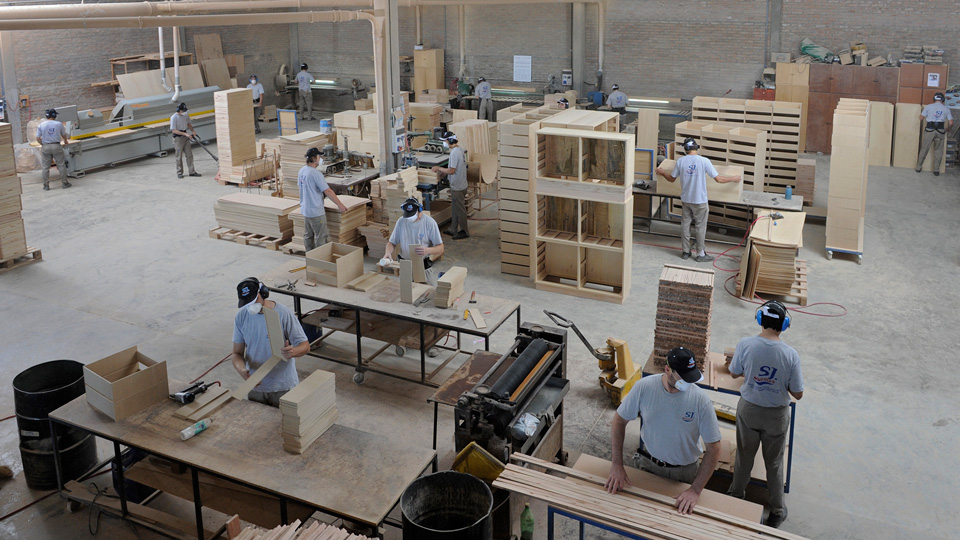

En VerdeLimon Hogar&Deco, combinamos técnicas tradicionales de carpintería con tecnología moderna para crear muebles de alta calidad. Desde la selección de la madera hasta el acabado final, cada paso del proceso es realizado con atención al detalle y dedicación a la excelencia. Trabajamos estrechamente con nuestros clientes para entender sus necesidades y ofrecer soluciones personalizadas que se ajusten a su estilo y presupuesto. Nuestra fábrica está equipada con maquinaria avanzada, lo que nos permite garantizar precisión y eficiencia en la producción, sin comprometer la calidad artesanal que nos caracteriza.
